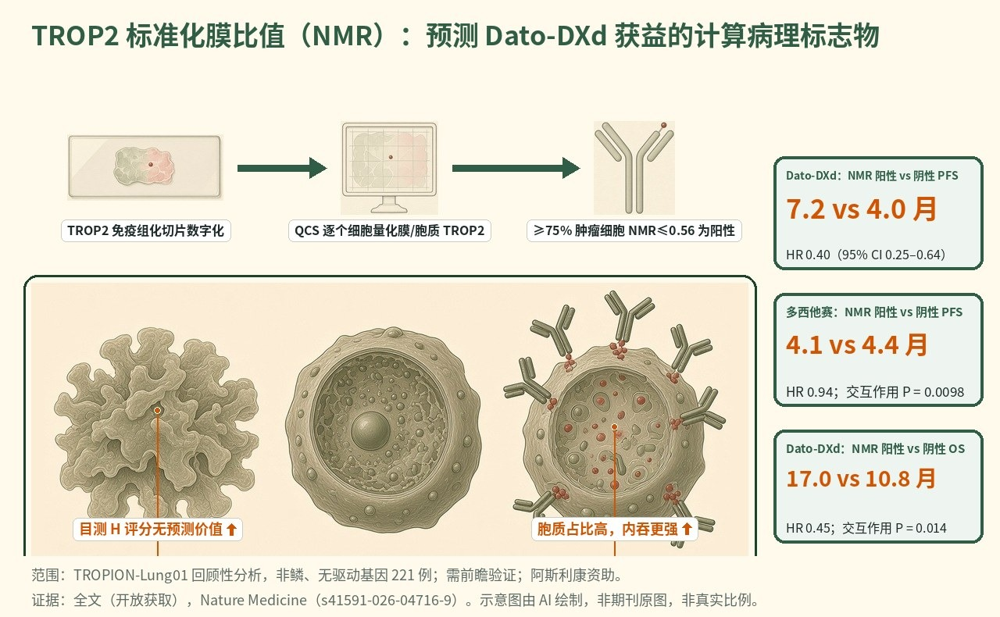

计算病理TROP2膜比值预测Dato-DXd肺癌获益
研究用全监督计算病理方法 QCS 在 TROP2 免疫组化切片上逐个细胞量化膜与胞质 TROP2，提出标准化膜比值（NMR）。在 TROPION-Lung01 非鳞、无驱动基因变异的非小细胞肺癌生物标志物人群（n = 221）中，NMR 阳性者接受 Dato-DXd 的中位无进展生存期为 7.2 对 4.0 个月（HR 0.40，95% CI 0.25–0.64），多西他赛组则无差别（4.1 对 4.4 个月，HR 0.94），治疗×标志物交互作用 P = 0.0098；中位总生存期 17.0 对 10.8 个月（HR 0.45，交互作用 P = 0.014）。传统目测 H 评分无预测价值。分析为回顾性、探索性，需前瞻验证。

- TROP2 免疫组化切片数字化
- QCS 逐个细胞量化膜与胞质 TROP2
- 胞质占比高（NMR 低）提示内吞能力更强
- NMR 阳性者 Dato-DXd 获益更大，多西他赛无差别
示意图概括了 TROP2 NMR 的计算方式与生物学解释：Dato-DXd 需被细胞内吞后在溶酶体释放载荷，TROP2 在胞质中占比更高的肿瘤细胞内吞能力更强。
研究背景与待解问题
达托泊单抗德鲁替康（Dato-DXd）是靶向 TROP2 的抗体偶联药物。3 期 TROPION-Lung01 中，Dato-DXd 相比多西他赛显著延长经治晚期非小细胞肺癌的 PFS，但总生存期改善未达统计学显著；非鳞癌与携带驱动基因变异的患者似乎获益最多。约 90% 的非小细胞肺癌表达 TROP2，而病理医生目测的 TROP2 免疫组化评分（如 H 评分）一直无法预测疗效。
本研究要回答的问题是：能否用计算病理从常规 TROP2 免疫组化切片中提取一个可预测 Dato-DXd 疗效的定量特征。
研究设计
研究分三步。第一步在 TROPION-PanTumor01（Dato-DXd 单药 1 期）的 115 例非小细胞肺癌样本中，测试 7 类可解释的 QCS 特征与 PFS 的关联，NMR 关联最强。第二步在细胞系与小鼠异种移植模型中检验 NMR 与 datopotamab 内吞、Dato-DXd 细胞毒性的关系。第三步在 TROPION-Lung01（Dato-DXd 对多西他赛的 3 期）样本中，用定型的 TROP2 免疫组化试剂（Roche Tissue Diagnostics）回顾性优化并验证切点，以多西他赛组判断标志物是预测性还是预后性。
核心结果
发现阶段
在 TROPION-PanTumor01 中，73%（84/115）样本为 NMR 阳性；NMR 阳性对阴性中位 PFS 5.5 对 2.9 个月（HR 0.39，95% CI 0.22–0.68），ORR 22.6% 对 3.2%。单看膜或胞质 TROP2 表达量均无关联，目测 H 评分与客观缓解、PFS 和肿瘤缩小均无关。
临床前验证
敲除 TROP2 后 Dato-DXd 失效，但过表达 TROP2 带来的额外肿瘤缩小有限。在非小细胞肺癌细胞系中，较低的 NMR（胞质 TROP2 相对更多）与更强的 datopotamab 内吞显著相关，对 Dato-DXd 敏感的细胞系 NMR 中位值也显著更低；单看膜或胞质表达量则无显著关联。
TROPION-Lung01 验证
在非鳞、无驱动基因变异人群（221 例）中，NMR 阳性者接受 Dato-DXd 的 PFS、OS 和 ORR 均优于 NMR 阴性者，而多西他赛组无差别，提示 NMR 是预测性而非预后性标志物。在全部 352 例可评估人群中结果相近：Dato-DXd 组 NMR 阳性对阴性中位 PFS 6.9 对 2.9 个月，ORR 32.7% 对 16.9%。相邻切片重复检测显示 NMR 判定可重复。在两项一线免疫治疗 3 期试验（NEPTUNE、POSEIDON）的样本中，NMR 阳性率相近，但与任何治疗组的 PFS 无关，进一步支持其不是预后因素。
机制解读
论文所证实的： 在回顾性分析中，NMR 区分出 Dato-DXd 获益不同的人群，而对多西他赛无区分作用；细胞系中 NMR 与 ADC 内吞能力相关。作者的解释是：Dato-DXd 使用血浆稳定的可裂解连接子，需经内吞进入溶酶体后才能释放拓扑异构酶 I 抑制剂载荷，胞质 TROP2 富集可能反映更活跃的受体转运与内吞。
需要进一步验证的： NMR 并非直接测量内吞；它是否适用于其他 TROP2 ADC（尤其是不稳定连接子或旁观者效应不同的设计）、其他瘤种，以及鳞癌和携带驱动基因变异的患者，目前未知。
局限与不确定
- TROPION-Lung01 的分析为回顾性、探索性，切点在同一数据集中优化，虽有交叉验证，仍需前瞻性试验确认。
- 生物标志物可评估人群只是原试验的一部分，且 TROPION-Lung01 总人群的 OS 改善本身未达统计学显著。
- 结论主要针对非鳞、无驱动基因变异的人群；鳞癌与驱动基因阳性亚型机制数据有限。
- NMR 的阈值需要精确的计算评估，强阳性样本难以靠目测判定，临床落地依赖经过验证的计算病理平台。
- 研究由阿斯利康资助，原试验由第一三共发起、与阿斯利康共同出资，多名作者为两家公司员工。
临床/产业意义
这是首个有望预测 TROP2 ADC 疗效的计算病理标志物，也是 AI 病理从“辅助读片”走向“伴随诊断”的具体案例。阿斯利康与罗氏诊断正合作开发整合 QCS 的 VENTANA TROP2（EPR20043）RxDx 伴随诊断，该器械于 2025 年 4 月获 FDA 突破性器械认定。前瞻性检验已经排上日程：TROPION-Lung17 专门入组经治、NMR 阳性的非鳞无驱动基因患者，AVANZAR、TROPION-Lung07、TROPION-Lung10 等一线 3 期也将提供验证数据。对其他 TROP2 ADC 开发方而言，“表达量高低”之外的亚细胞分布可能成为新的人群选择维度。